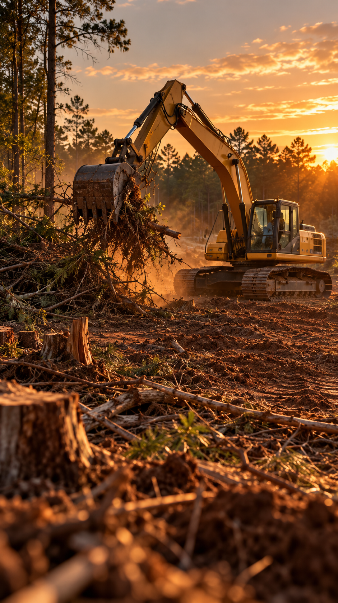
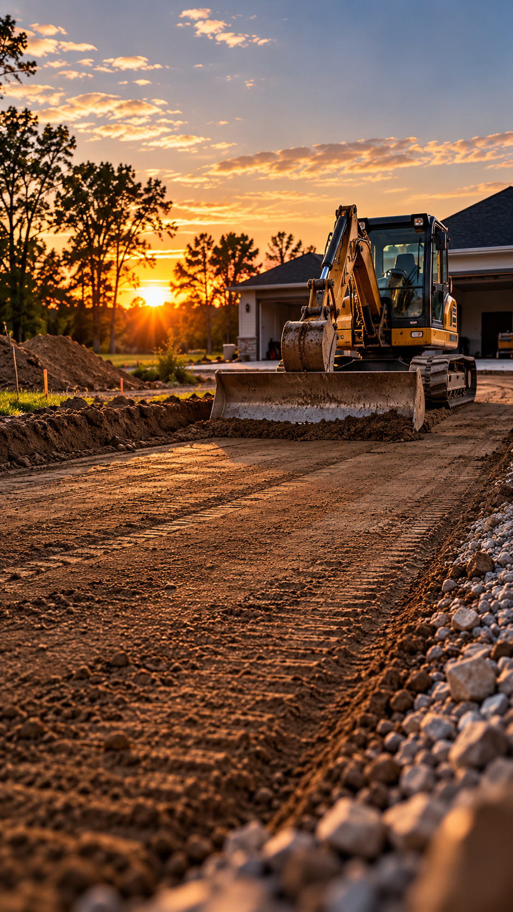

Underground Utilities.
Grading. Site Prep.
Done Right.
Underground utility installation, grading, excavation, and site prep for builders, general contractors, and developers across North Carolina. Underground utility installation, grading, excavation, and site prep for builders, general contractors, and developers across North Carolina.
- Since 2022In business
- North CarolinaService area
- Licensed & insuredTo confirm
- Free estimatesNo obligation
First on site.
Ready for what’s next.
Pinnacle Projects LLC is an owner-operated contractor serving builders, general contractors, and developers across North Carolina since 2022.
We handle the work that has to happen before anything else can: getting water, sewer, and storm lines in the ground, cutting pads, setting grade, and clearing land so the next trade can build on solid footing. Every job gets a straight bid, careful digging, and a site left clean and ready.
Who we work with
- General contractorsUnderground utilities, excavation, grading, and site prep that fits your construction schedule.
- BuildersLot clearing, building pads, footings, and utility taps done so the next trade can start on time.
- Developers & commercialSitework and utility installation for larger residential and commercial projects, from first cut to final grade.
Homeowners and landowners: we also take on select lot clearing, driveway, and drainage jobs.
What we specialize in
Underground utilities, excavation, grading, and site prep performed to plan, on schedule, and ready for the next phase of construction.
Underground utilities
Water, sewer, storm, and conduit runs put in at depth and backfilled right.
- Water lines
- Sewer lines
- Storm drainage
- Conduit runs
Site prep & grading
Pads cut, slopes set, and water sent where you want it before the build starts.
- Building pads
- Rough & final grade
- Slopes & drainage
- Driveway cuts
Excavation & trenching
Footings, foundations, and clean trench lines dug to spec and to depth.
- Footings
- Foundations
- Utility trenches
- Backfill & compaction

Land clearing
Brush, stumps, and overgrowth taken off the lot and hauled out of the way.
- Brush removal
- Stump removal
- Lot clearing
- Debris haul-off
Recent work
Job sites across North Carolina. Swipe through a few of them.
-
-
-
-
-
-

Photo captions, towns, and descriptions are placeholders — swap them as the real job photos go in.
Owner-operated since day one
Rique Rojo started Pinnacle Projects in 2022 with a simple idea: show up, do the dirt work properly, and leave a site the next trade can actually build on.
It’s still run that way. Rique is on the machine and on the job, so the person quoting your work is the same person doing it. No layers, no handoffs, no crew you’ve never met turning up in your driveway.
That means straight answers on what a site needs, an honest read on what it’ll take, and work that holds up once everything else gets built on top of it.
Rique Rojo Owner · Pinnacle Projects LLC
Built for the construction schedule.
What a project manager can count on when Pinnacle is on site.
One point of contact
You talk directly with the owner, the person responsible for the work, from bid through completion.
Work performed to plan
Scope, elevations, trench depths, and site requirements are reviewed before work begins.
Schedule-conscious
We coordinate around the project schedule and let you know right away when site conditions affect the work.
Ready for the next trade
We leave the site graded, backfilled, and ready for what’s next.
Request a bid
Upload your plans and project details. We’ll get back to you with a straight answer on scope, timing, and price.
Phone
(000) 000-0000Service area
North Carolina
- Town list to be confirmed
Thanks, we got it.
Rique will reach out within 1 business day to talk through the bid.
Mockup form — nothing was sent anywhere yet.
Not bidding a job right now?
Add Pinnacle to your sub list for upcoming projects. Rique will send over his contact and vendor details.
You’re on the list. Rique will reach out with his details.